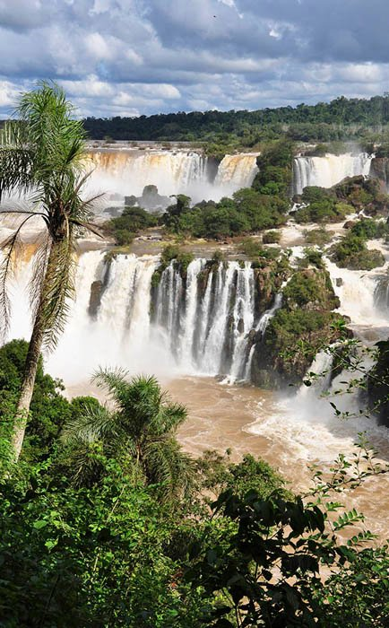
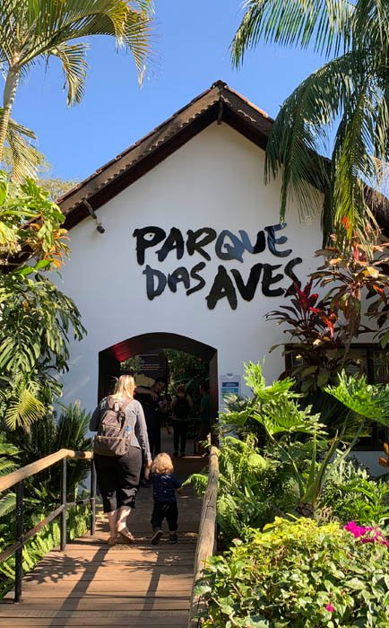
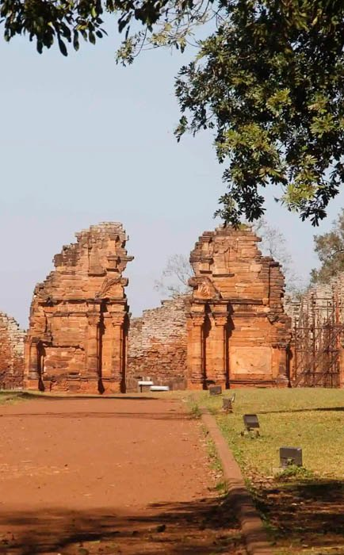
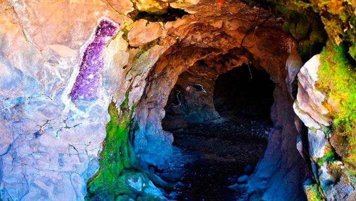
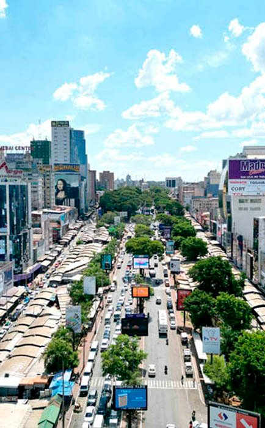

Traslados desde y hacia los aeropuertos
Viaja sin preocupaciones desde y hacia los aeropuertos de Foz de Iguazú (IGU) y Puerto Iguazú (IGR). Un traslado confiable y a tiempo a tu hotel o a cualquier otro destino en la ciudad.
Aeropuertos IGR · IGUCordobés Taxi y traslados privados y seguros a Cataratas, aeropuerto y más.
WhatsApp +54 9 3548 46-5150Teléfono +54 3757-423747
Baja para manejar
En Cordobés Taxi y Traslados somos más que un simple servicio de transporte: somos tus anfitriones en una de las maravillas naturales más impresionantes del mundo. Con años de experiencia y un profundo conocimiento de la región, nuestro equipo de conductores profesionales se dedica a ofrecerte un servicio seguro, puntual y personalizado.
Nos enorgullece ser tu conexión con los lugares más emblemáticos de la triple frontera, desde las majestuosas Cataratas del Iguazú hasta los vibrantes centros de compras en Paraguay y Brasil. Nuestra flota está pensada para tu comodidad y seguridad, para que cada viaje sea placentero y memorable. Con nosotros no solo llegas a tu destino: lo haces con la confianza que solo un servicio local y dedicado puede darte.
Puntualidad, seguridad y comodidad en Argentina, Brasil y Paraguay. Cada servicio pasa por tu ventanilla.
Viaja sin preocupaciones desde y hacia los aeropuertos de Foz de Iguazú (IGU) y Puerto Iguazú (IGR). Un traslado confiable y a tiempo a tu hotel o a cualquier otro destino en la ciudad.
Aeropuertos IGR · IGUExplora las maravillas de la región con total comodidad. Tours privados a los principales puntos turísticos, como las Cataratas del Iguazú y el Parque das Aves, adaptados a tus horarios y preferencias para una experiencia inolvidable.
Cataratas · Parque das AvesEstamos a tu disposición en cualquier momento. Solicita tu taxi a cualquier hora del día o de la noche para traslados desde tu hotel, con movilidad y seguridad para cualquier compromiso o paseo nocturno.
Las 24 horasDisfruta de un tour de compras seguro y tranquilo. El servicio a Ciudad del Este te permite aprovechar al máximo tu tiempo para encontrar las mejores ofertas y productos, con la tranquilidad de un viaje sin complicaciones.
Ciudad del EsteNuestra flota te lleva a cualquier punto de interés de la región, en Argentina o en Brasil, y también a los sitios menos conocidos que muestran la verdadera esencia de la triple frontera. Toca un cartel y mira cómo gira el camino.
Lado argentino y brasileño. El principal punto turístico, con circuitos de senderos y paseos en lancha.
Lado brasileño. Aviario en plena selva, a pocos minutos de las Cataratas.
Mirador a la confluencia de los ríos Iguazú y Paraná, donde se encuentran Brasil, Argentina y Paraguay.
Una atracción que rinde homenaje a la cultura local y a la importancia del bosque.
Un lugar para observar de cerca diversas especies de colibríes.
Centro de rehabilitación y conservación de la fauna silvestre.
Una de las misiones jesuíticas mejor conservadas de Argentina, Patrimonio Mundial de la UNESCO.
Donde puedes ver y comprar piedras semipreciosas, como amatistas y ágatas.
Una impresionante cascada que forma una falla en el río Uruguay.
Grandes centros comerciales con una enorme variedad de productos, desde electrónicos hasta perfumes.
Una hermosa cascada a pocos kilómetros del centro de la ciudad.
Conocemos cada rincón de la región y te llevamos no solo a los sitios más famosos, sino también a lugares menos conocidos que te permiten descubrir la verdadera esencia de la triple frontera.
Conductores profesionales, experimentados y calificados, con un profundo conocimiento de la triple frontera. Priorizamos tu seguridad por encima de todo, en vehículos modernos, con mantenimiento regular y equipados para el máximo confort.
Ya sea un traslado al aeropuerto, un paseo turístico o un viaje de compras, la puntualidad es nuestra prioridad. Un servicio a la medida de tu horario, sin esperas innecesarias, para aprovechar al máximo tu tiempo en Iguazú.
Somos más que un servicio de taxi: somos tus guías en la región. Atención humanizada y transparente, siempre disponibles para responder tus preguntas y recomendarte los mejores lugares, para que tu experiencia sea inolvidable.





Taxi Iguazú5 / 5 Alejandro fue el mejor conductor que pude encontrar para mis traslados en Iguazú. Profesional y amable a la vez. ¡Muy recomendable!
Taxi Iguazú5 / 5 Desde el primer momento se mostró como una persona honesta, honorable y profundamente confiable… El precio que me ofreció fue justo y acorde, algo que se valora mucho en un lugar turístico.
Taxi Iguazú5 / 5 Puntualidad, responsabilidad, buen precio, muy atento Alejandro. Lo volvería a llamar sin dudas.
Taxi Iguazú5 / 5 Muy buena experiencia. Muy puntual y atento Alejandro. ¡Nos dio recomendaciones exactas!
Taxi Iguazú5 / 5 Excelente atención y servicio, puntualidad, excelentes recomendaciones para paseos: Cataratas, Aripuca, bar de hielo, Parque das Aves, Cataratas de Brasil, con traslado internacional.
Taxi Iguazú5 / 5 Muy buen servicio de Orlando y Marcelo, muy atentos, y lo recomiendo para el que vaya.
Taxi Iguazú5 / 5 Tu atención con los pasajeros, tu conocimiento local y tu disposición a ofrecer recomendaciones y consejos hacen que la experiencia de visitar Puerto Iguazú sea aún más especial.